Cómo funciona todo el sistema, paso a paso: para el cliente, el mesero, la cocina, caja y
el administrador del restaurante.
Los ejemplos usan el restaurante de demostración “Fogón 27”. Esta guía describe la versión
de demostración; algunos detalles cambiarán cuando el producto salga a la venta.
Contenido
1. Qué es Platterio y cómo funciona
2. Quién usa qué: roles y accesos
3. Puesta en marcha (administrador)
4. El cliente: pedir desde la mesa
5. Vista 3D y personalización del plato
6. El mesero
7. La cocina
8. Caja: cobro, turnos y cierre
9. Domicilios y pedidos para recoger
10. Administrador: reportes, calificaciones y alertas
11. Tu marca, idioma y moneda
12. Un día de trabajo, de principio a fin
13. Preguntas frecuentes y problemas comunes
14. Lo que Platterio no hace · Estado de esta versión
1. Qué es Platterio y cómo funciona
Platterio es la carta digital de tu restaurante, pero también el sistema que lleva el pedido
desde la mesa hasta la caja. Funciona en el navegador de cualquier celular o tablet; no hay
que instalar nada.
1 · ClienteEscanea el QR de su mesa y mira la carta.
›
2 · MeseroAbre la mesa y le da un PIN.
›
3 · ClienteArma el pedido en el carrito de la mesa y lo envía.
›
4 · MeseroRevisa y confirma.
›
5 · CocinaPrepara y marca listo.
›
6 · CajaCobra y cierra.
Ideas clave
QR fijo + PIN. El QR de cada mesa se imprime una vez y no cambia. Por sí solo no deja
pedir: el mesero abre la mesa y entrega un PIN de 4 dígitos. Así solo pide quien está
sentado.
Se puede mirar sin pedir. Aunque la mesa esté cerrada, el cliente ve la carta con
fotos, ingredientes, alérgenos y precios.
Carrito compartido. Todos los de la mesa ven el mismo carrito en vivo y el pedido
sale a nombre de cada quien.
El mesero manda. Ningún pedido llega a cocina sin que el mesero lo confirme. Y el
mesero (o caja) puede editar un pedido en cualquier momento: queda registrado quién cambió
qué y por qué.
Todo en vivo. Lo que pasa en una pantalla aparece al instante en las demás: avisos de
nuevo pedido, cambios, estado del pedido para el cliente.
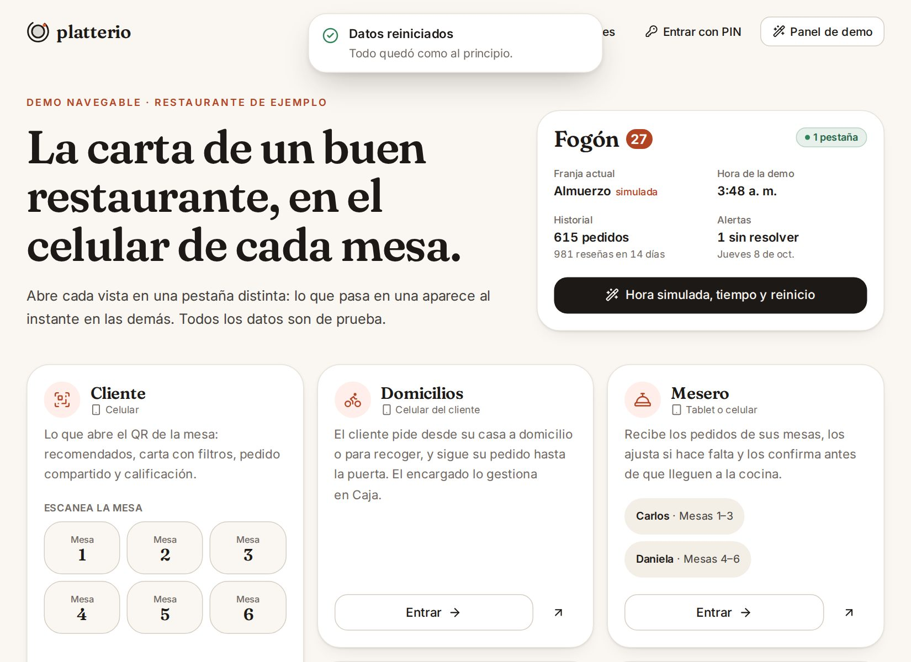
El inicio de la demostración: una entrada para cada rol.
2. Quién usa qué: roles y accesos
Cada persona del equipo entra con su propio PIN (el PIN identifica a la persona). El
administrador crea los usuarios y su rol; cada rol ve solo lo que le toca.
Abre la dirección del sistema en el celular, la tablet o el computador.
Elige tu pantalla (/mesero, /cocina,
/caja o /admin).
Escribe tu PIN. Si es correcto, entras directo a lo tuyo.
Al terminar, toca Salir arriba a la derecha.
PINLos del equipo van de 4 a 6 dígitos (mesero y cocina) o de 6 a 8 (administrador
y encargado). En la demostración, la pantalla de entrada tiene una lista de usuarios con
su PIN para probar cada rol; en un negocio real los PIN no se muestran nunca.
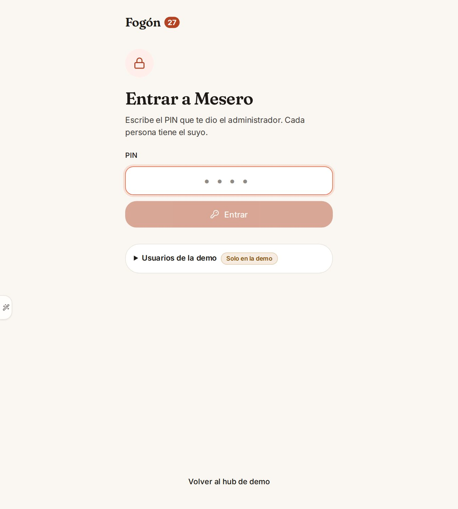
Pantalla de entrada con PIN.
3. Puesta en marcha (administrador)
Antes del primer día, el administrador deja listo el negocio. Lo único que no puede faltar son
el menú, las mesas y el equipo.
3.1 El equipo
En Equipo se agregan las personas: nombre, rol y PIN. Un mesero nuevo queda sin mesas;
luego se le asignan en Configuración → Meseros y mesas (cada mesa tiene un solo
mesero). Para sacar a alguien se desactiva: no se borra, así el historial se conserva y
sus mesas quedan sin mesero hasta reasignarlas.
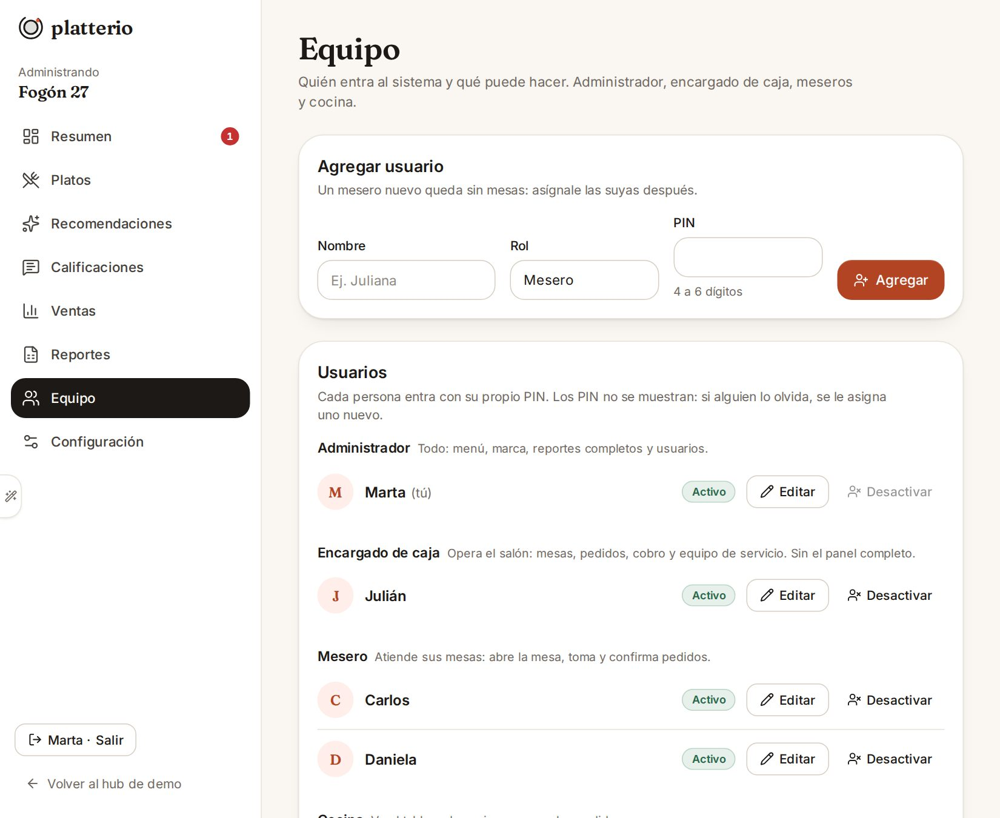
Equipo: usuarios por rol, con su estado.
3.2 Las mesas y sus QR
En Configuración → Mesas y códigos QR se agregan o quitan mesas. Cada mesa tiene su QR
fijo: descarga la tarjeta imprimible (con el nombre del restaurante y el número de mesa) y
pégala en la mesa. Ese QR no vence ni cambia.
ConsejoImprime el QR en un material resistente a líquidos. Si una mesa se quita y luego
vuelve a existir, su QR anterior no sirve.
3.3 El menú
En Platos se crean y editan los platos. Cada plato tiene:
Nombre, descripción y categoría (Desayunos, Hamburguesas, Bebidas…).
Opciones con precio propio: Sencilla / Doble, tamaños, sabores.
Ingredientes con alérgenos. Los alérgenos del plato se calculan solos a partir de los
de cada ingrediente.
Nivel de picante, fotos y las franjas en que se ofrece (desayuno,
almuerzo, tarde, noche).
Destacado por la casa: aparece primero entre los recomendados como “Nuevo en la
casa”.
Activo en la carta: si lo apagas, el plato desaparece de la carta al instante (por
ejemplo, cuando se agota).
Nombre y descripción en inglés (opcionales) para la carta en inglés.
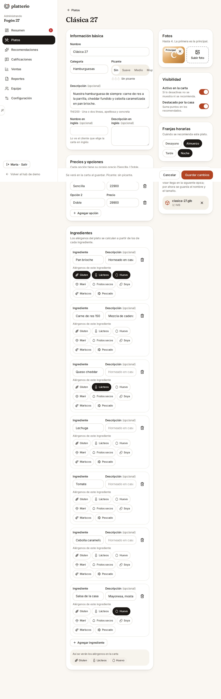
Ficha de un plato en el panel del administrador.
3.4 Recomendados
La carta recomienda platos según la hora (franja), lo más pedido, lo mejor calificado y las
alergias del cliente. En Recomendaciones el administrador ve por qué se sugiere cada
plato.
3.5 Reglas y tiempos
En Configuración:
Umbral de alerta de servicio: si una mesa califica el servicio por debajo de ese
número de estrellas, se crea una alerta para el administrador.
Tiempo límite de confirmación: si el mesero tarda en confirmar un pedido, su tarjeta
se pone en alerta; al doble de ese tiempo se avisa al administrador.
Cierre automático de mesas: una mesa sin pedidos por entregar y sin actividad se
cierra sola (por defecto, a los 30 minutos; el mesero puede cambiarlo para una mesa en
particular).
4. El cliente: pedir desde la mesa
4.1 Escanear y mirar
El cliente escanea el QR de su mesa con la cámara del celular. Si el mesero
todavía no abrió la mesa, ve un mensaje claro y dos opciones:
Avisar al mesero (le llega un aviso al salón) o Ver la carta mientras tanto.
Mirando la carta puede ver fotos, ingredientes, alérgenos, filtros, recomendados, el visor
3D y los precios. Lo único que no puede es pedir: una barra abajo le recuerda que
su mesero abre la mesa y le da un PIN.
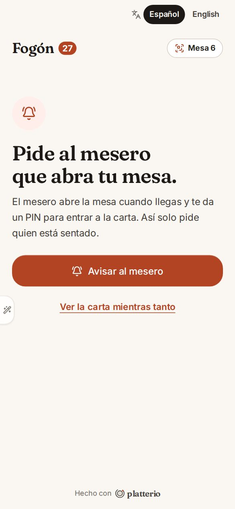
Mesa sin abrir.
4.2 Entrar con el PIN
El mesero abre la mesa y le dice el PIN (o le muestra el QR que ya lo trae).
El cliente escribe cómo quiere que lo llamen (“Ana”) y el PIN de 4 dígitos.
Toca Ver la carta. Si estaba mirando la carta, vuelve a la
misma pantalla.
La primera vez se le pregunta por alergias o dieta (opcional). Con eso la carta le
avisa de los platos con su alérgeno y no se los recomienda; se guarda en su celular.
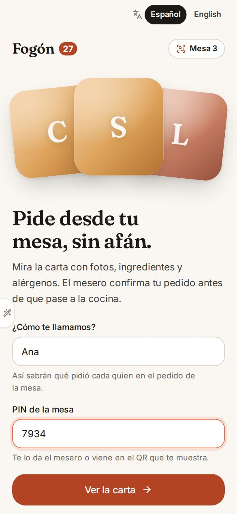
Entrada con nombre y PIN.
4.3 La carta y la ficha del plato
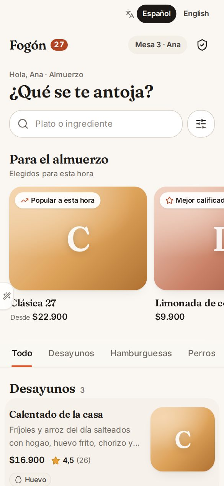
La carta: recomendados de la hora, categorías y buscador.
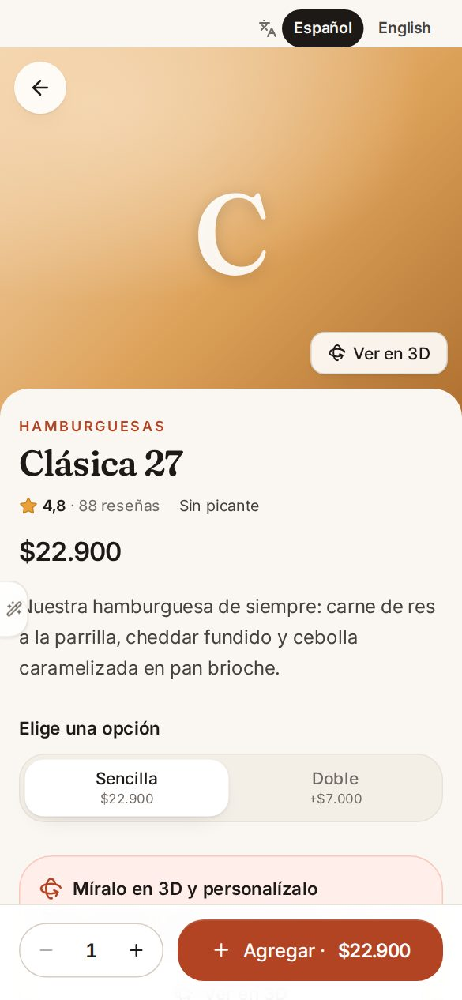
Ficha del plato: opciones, ingredientes, alérgenos y nota para cocina.
Arriba hay un buscador por plato o ingrediente y filtros (sin ciertos
alérgenos, nivel de picante, categoría).
En la ficha se elige la opción (Sencilla o Doble), la cantidad y, si se
quiere, una nota para la cocina (“sin cebolla”).
Si el plato contiene un alérgeno del cliente, aparece un aviso rojo. Puede pedirlo igual; si
tiene dudas, le pregunta al mesero.
4.4 El carrito de la mesa y el envío
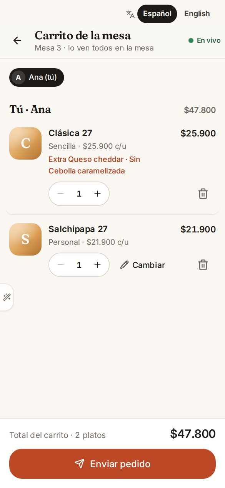
Carrito compartido: cada quien ve sus platos y los de los demás.
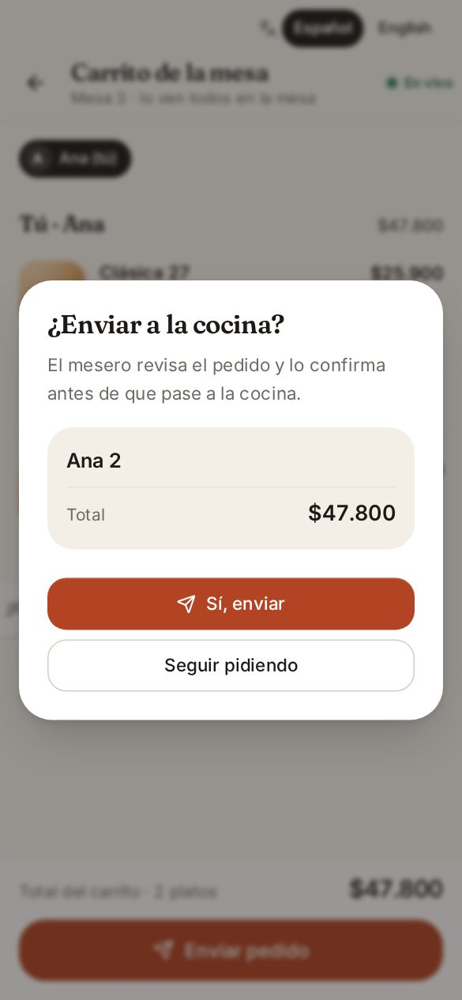
Confirmación antes de enviar.
Cada persona solo puede cambiar o quitar lo que agregó ella. Cuando otro agrega algo,
aparece un aviso.
Al tocar Enviar pedido se muestra un resumen (“Ana 2 · Luis 2”) y
se envía al mesero, no a la cocina.
Cada envío es una ronda. Lo que se agregue después irá en la ronda siguiente.
4.5 Seguir el pedido y calificar
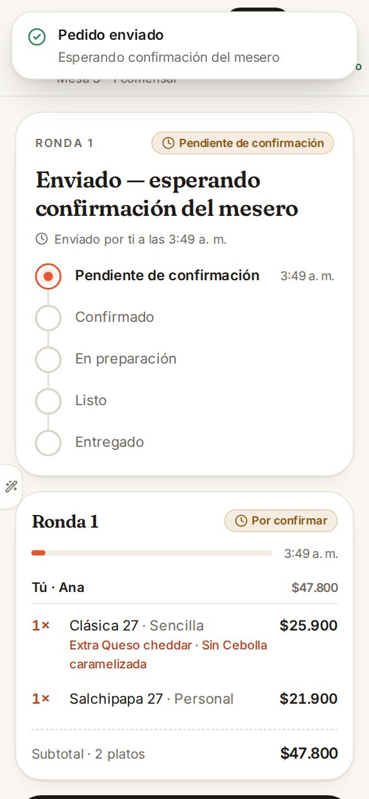
Pedido enviado: espera la confirmación del mesero.
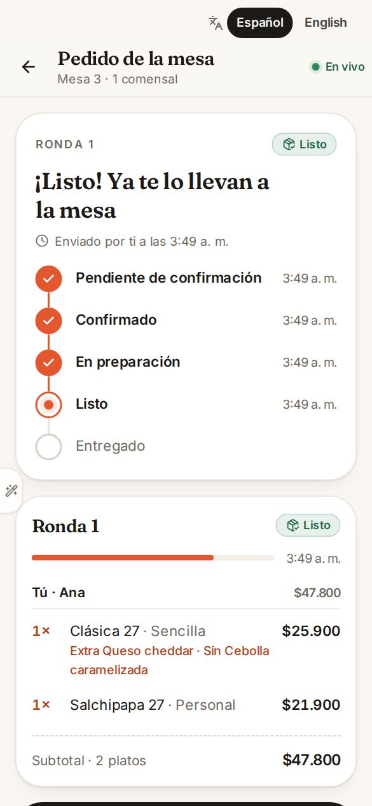
La línea de tiempo avanza sola con cada cambio.
El estado de cada ronda pasa por:
Pendiente de confirmación → Confirmado → En preparación → Listo → Entregado. Si el
mesero ajusta algo (por ejemplo, quita un plato agotado), el cliente ve el cambio con el
motivo. Cuando algo se entrega, aparece la invitación a calificar cada plato (1 a 5
estrellas, con comentario opcional) y el servicio del mesero (una sola vez por mesa). Una
calificación baja del servicio genera una alerta para el administrador.
5. Vista 3D y personalización del plato
Los platos que tienen 3D muestran un botón Ver en 3D en su ficha. El cliente puede
girar el plato, separarlo por capas y cambiarlo a su gusto antes de pedir.
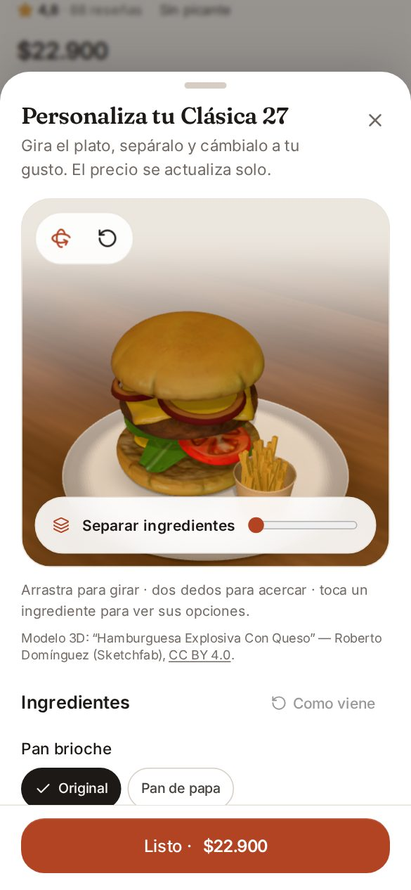
El plato en 3D: se gira con el dedo.
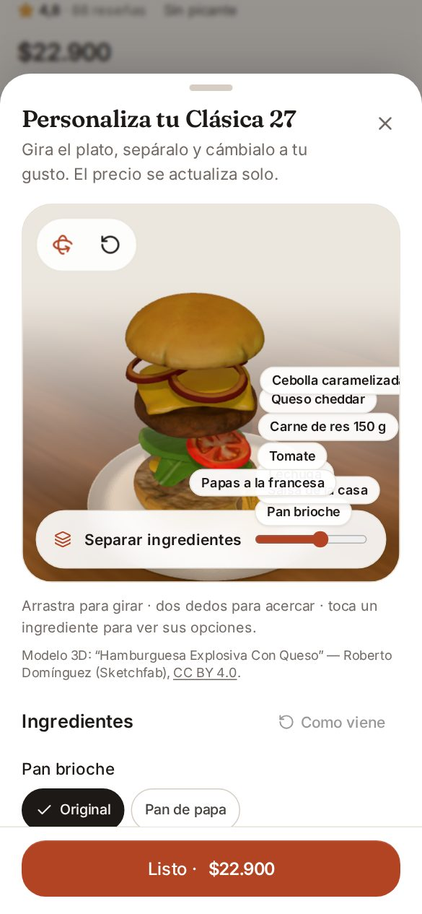
“Separar ingredientes” abre el plato por capas.
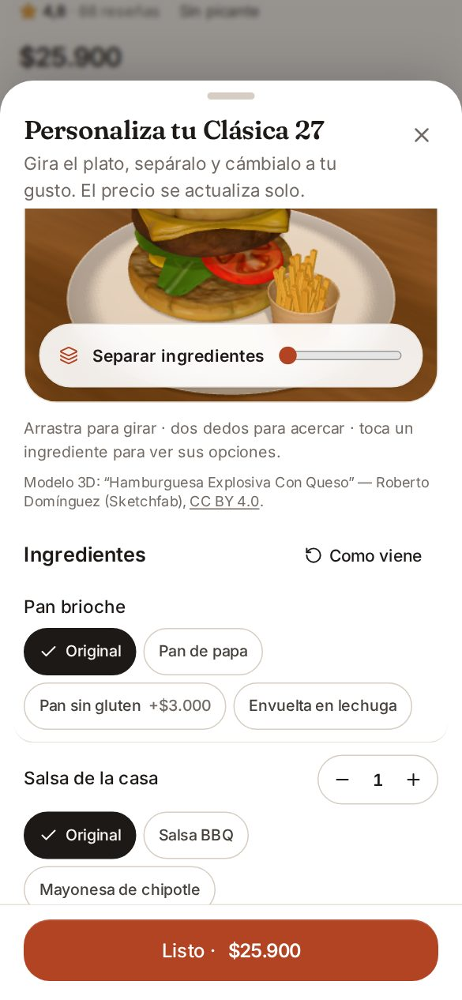
La lista para quitar, agregar o cambiar.
Quitar un ingrediente, pedir extra, reemplazar (pan sin gluten, pollo
en vez de carne) o cambiar el acompañante.
El precio se actualiza solo (quitar un ingrediente no descuenta; los extras y
reemplazos suman).
Si el cliente tiene alergias, el botón Adaptar a mis alergias propone los cambios
necesarios.
Al cerrar el visor, la ficha muestra “Tu versión: Sin cebolla · Extra queso” y el botón
Agregar ya lleva el precio nuevo.
Cómo le llega al equipo
El pedido personalizado viaja completo: el carrito y el pedido del cliente muestran su
versión, el mesero ve las líneas SIN / EXTRA / AGREGAR y la cocina las ve
resaltadas (rojo para “sin”, verde para “extra”).
Servicio aparteEl 3D se activa plato por plato: cada plato necesita su modelo y su
configuración de ingredientes. Los platos sin 3D funcionan igual, con fotos. En el panel
del administrador cada plato indica si tiene el “Visor 3D activo”.
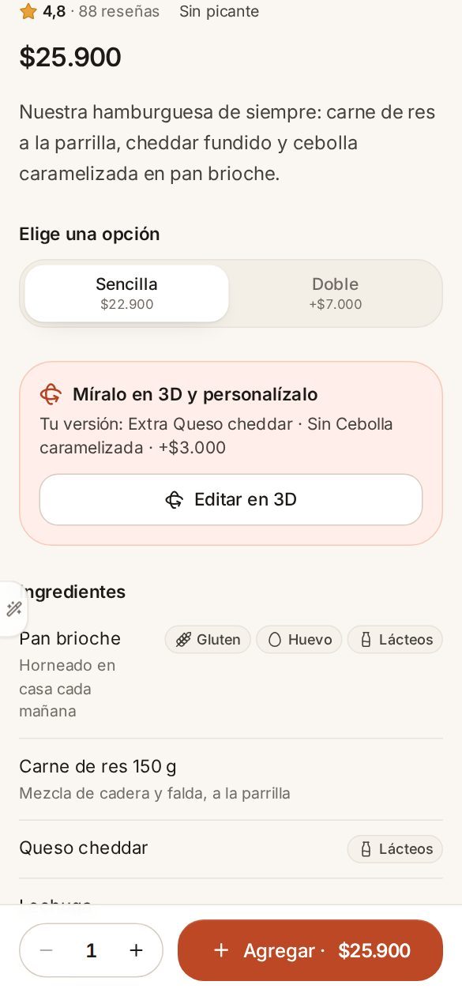
La ficha con la versión personalizada.
6. El mesero
El mesero entra a /mesero y ve sus mesas. Cada mesa muestra su
estado: libre, con clientes, pedido por confirmar, en cocina o listo para entregar. Lo más
urgente sube primero.
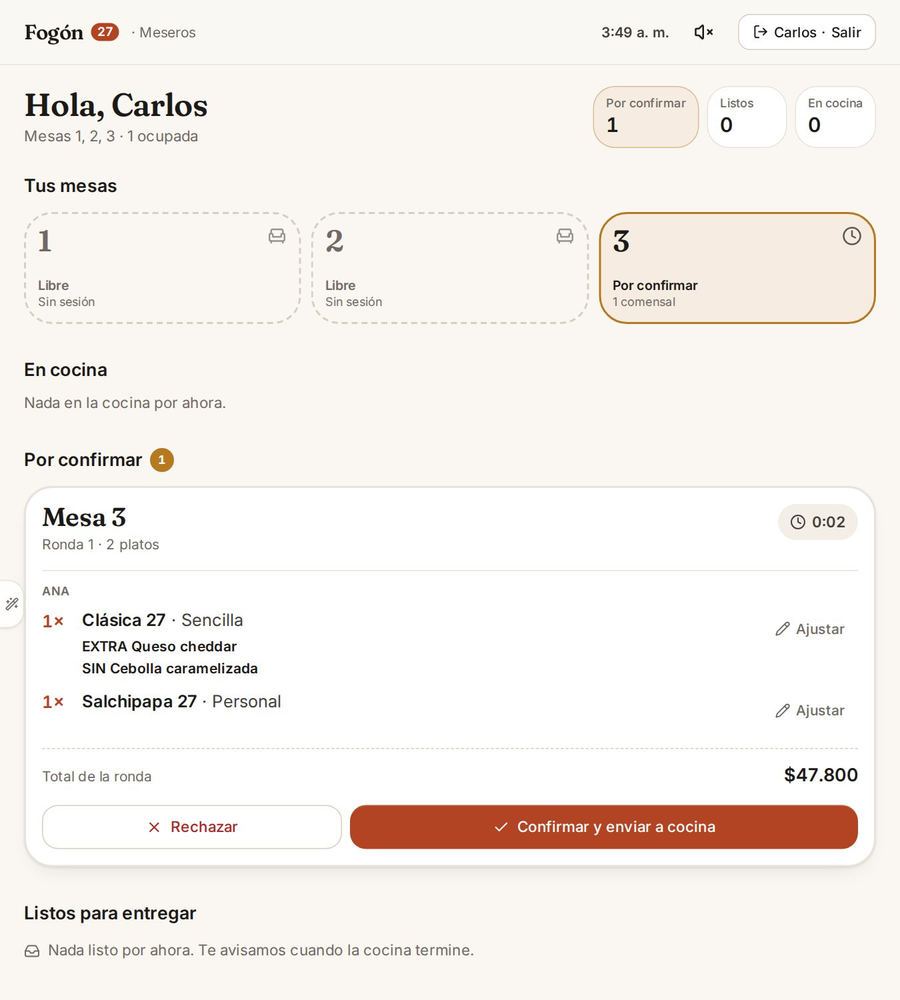
Un pedido por confirmar: ítems agrupados por comensal, con notas y personalizaciones.
6.1 Abrir una mesa
Toca la mesa libre y luego Abrir mesa.
Aparece el PIN de 4 dígitos y un QR que lo trae incluido.
Díselo al cliente o muéstrale el QR. Solo vale mientras la mesa esté abierta.
Si un cliente tocó “Avisar al mesero”, verás un aviso en el salón (“La Mesa 5 pide que la
abras”) y se atiende al abrir la mesa.
Desde la misma hoja puedes cambiar en cuánto tiempo se cierra sola esa mesa.
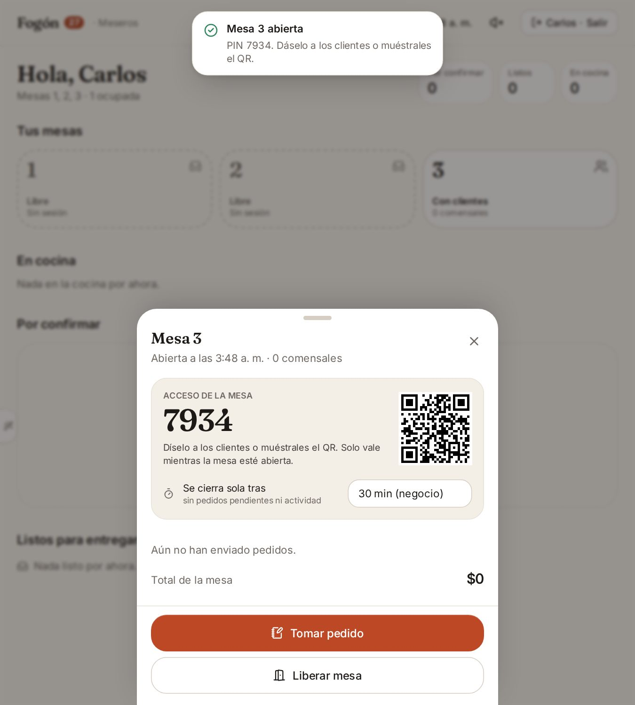
Mesa abierta: PIN, QR y tiempo de cierre automático.
6.2 Confirmar y ajustar un pedido
Confirmar y enviar a cocina: el pedido pasa a la cocina.
Rechazar: pide un motivo (“Cocina cerrada”, “Pedido duplicado”…) y
el cliente lo ve.
Ajustar un ítem antes de confirmar: quitar (por ejemplo “Agotado”),
cambiar cantidad u opción. Siempre con motivo, y el cliente ve el cambio.
6.3 Tomar un pedido tú mismo
Si el cliente prefiere pedirte a ti, toca la mesa y Tomar pedido:
eliges platos, cantidades, opciones y notas, y Enviar a cocina.
Va directo a cocina (quien lo toma es quien lo confirma). Si la mesa estaba libre, se abre
sola con su PIN. En el ticket esos platos aparecen a nombre de “Mesero”.
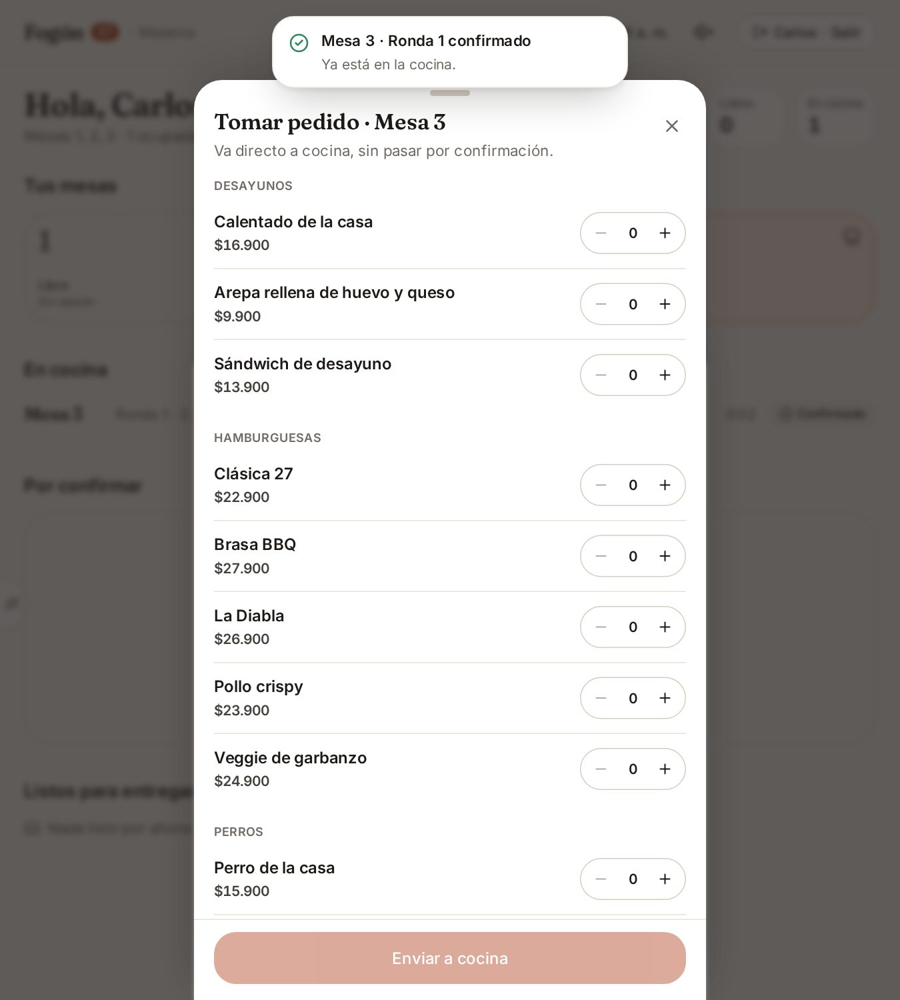
Tomar pedido en la mesa.
6.4 Editar un pedido ya enviado
El mesero (y caja) puede tocar una ronda en cualquier momento, incluso ya en cocina o
entregada: Editar en la ficha de la mesa. Se puede quitar,
cambiar cantidad u opción, agregar platos o anular la ronda.
Siempre con rastroTodo cambio (menos agregar) pide un motivo y queda guardado:
quién, cuándo, qué cambió y por qué. La cocina recibe un aviso
“Cambios del mesero” hasta que toca Visto, y el
administrador lo ve en el reporte “Cambios y anulaciones”.
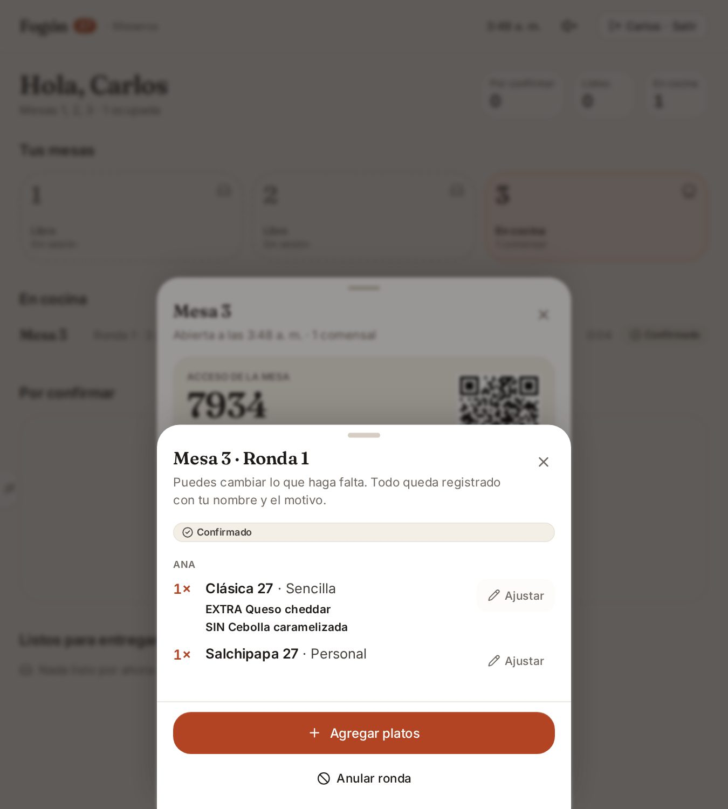
Editar una ronda, con su registro de cambios.
6.5 Entregar, liberar y cancelar
Marcar entregado cuando llevas los platos que la cocina marcó
listos (te llega un aviso).
Liberar mesa cuando los clientes se van: se cierra la sesión y el
próximo QR abre una visita nueva. Solo se puede si no quedan rondas por entregar.
Cancelar mesa (solo encargado y administrador): cierra la mesa
aunque haya rondas sin entregar, que quedan rechazadas con el motivo “Mesa cancelada”.
Si nadie hace nada por un rato, la mesa se cierra sola por inactividad (nunca con
pedidos pendientes).
7. La cocina
La cocina entra a /cocina. Es un tablero oscuro de letra grande,
pensado para leerse a distancia, con tres columnas en orden de llegada: Confirmados,
En preparación y Listos. Solo aparece lo que el mesero confirmó.
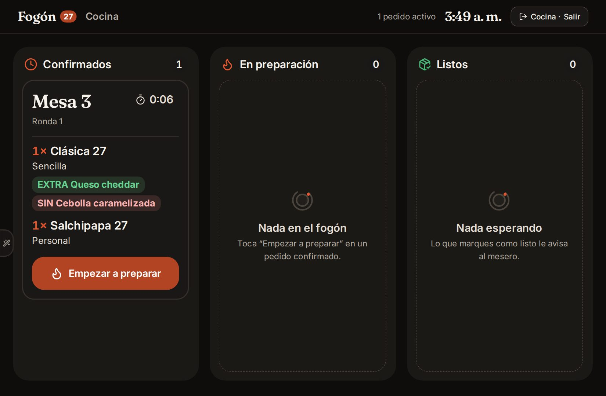
Tablero de cocina con un pedido personalizado (“EXTRA queso”, “SIN cebolla”).
Llega un pedido nuevo a Confirmados con un aviso en pantalla.
Toca Empezar a preparar y pasa a En preparación.
Cuando está listo, toca Marcar listo. Le llega el aviso al mesero y
el cliente lo ve avanzar.
La tarjeta cambia de color si el pedido lleva mucho tiempo (más de 10 min, amarillo; más de
20, rojo).
Las notas del cliente salen resaltadas, igual que las personalizaciones.
Si el mesero cambia algo de un pedido que ya está en cocina, aparece el recuadro
“Cambios del mesero” con lo nuevo; toca Visto para confirmar
que lo leíste.
Los domicilios llegan con su código (por ejemplo “Domicilio D-4K7Q”) y se preparan igual.
8. Caja: cobro, turnos y cierre
El encargado (y el administrador) entra a /caja. Tiene cinco
pestañas: Salón (todo el salón, igual que el mesero pero con todas las mesas),
Domicilios, Caja, Mesas y meseros y Equipo.
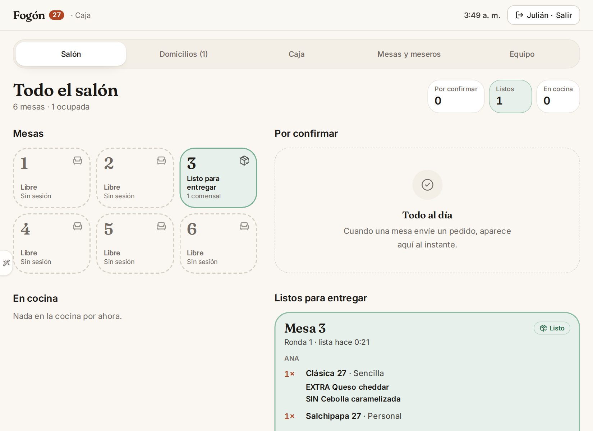
Caja: todo el salón y las pestañas de trabajo.
8.1 Abrir la caja
Antes de cobrar hay que abrir un turno: en la pestaña Caja, escribe el
fondo inicial en efectivo (lo que hay en el cajón) y toca
Abrir caja. Sin caja abierta no se registran pagos. Solo puede
haber un turno abierto a la vez.
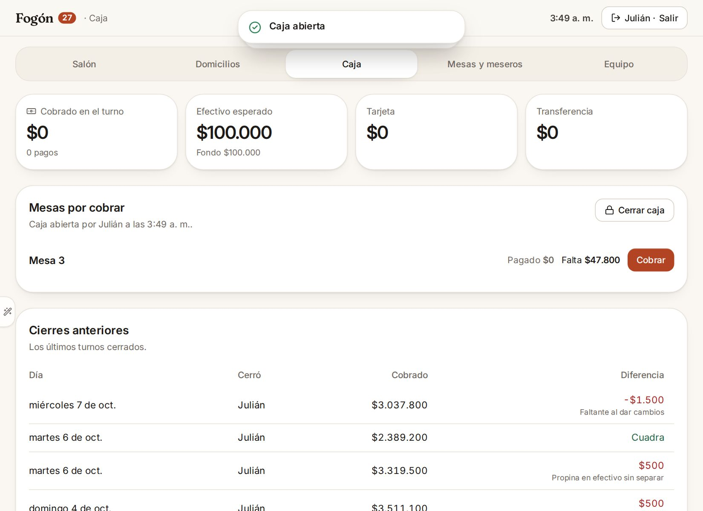
Turno abierto: lo cobrado, el efectivo esperado y las mesas por cobrar.
8.2 Cobrar una mesa
Desde Mesas por cobrar o desde la ficha de la mesa toca
Cobrar. Elige la forma de pago (efectivo, tarjeta, transferencia u otro) y el valor. La cuenta puede pagarse en partes y con varias formas; no deja
registrar más de lo que falta.
ImportantePlatterio no procesa pagos: tú cobras como siempre (datáfono,
efectivo, transferencia) y aquí lo registras. Por eso no hay comisión por venta.
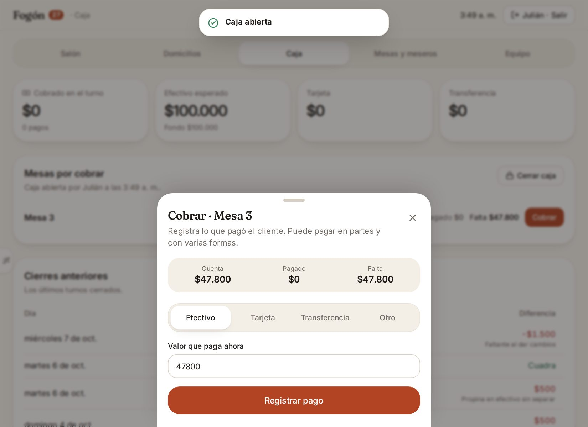
Cobrar una mesa: cuenta, pagado y falta.
Si liberas o cierras una mesa con saldo, el sistema no te lo impide (el servicio no
puede quedar atascado), pero te avisa, y esa cuenta aparece luego en el reporte
“Mesas cerradas sin cobro registrado”.
8.3 Cerrar la caja
Toca Cerrar caja y cuenta el efectivo del cajón.
Escribe cuánto contaste. El sistema compara con lo esperado:
fondo inicial + pagos en efectivo del turno.
Si cuadra, se cierra. Si hay diferencia (faltante o sobrante), debes explicar por qué
en una nota.
El resumen del turno queda guardado y se ve en Cierres anteriores y en el reporte de
cierres.
Si quedan mesas por cobrar, puedes cerrar igual, pero esos pagos quedarán sin registrar.
8.4 Mesas y meseros, y equipo
En Mesas y meseros el encargado asigna qué mesas atiende cada mesero (toca una mesa
para asignarla o quitarla). En Equipo crea y desactiva meseros y personal de cocina. No
puede tocar al administrador.
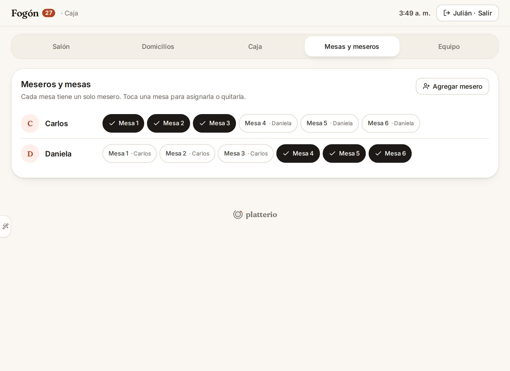
Asignación de mesas a meseros.
9. Domicilios y pedidos para recoger
Los clientes pueden pedir desde su casa en /domicilio, a domicilio o
para recoger en el local. El administrador define las zonas y el horario; caja gestiona los
pedidos.
9.1 Lo que hace el cliente
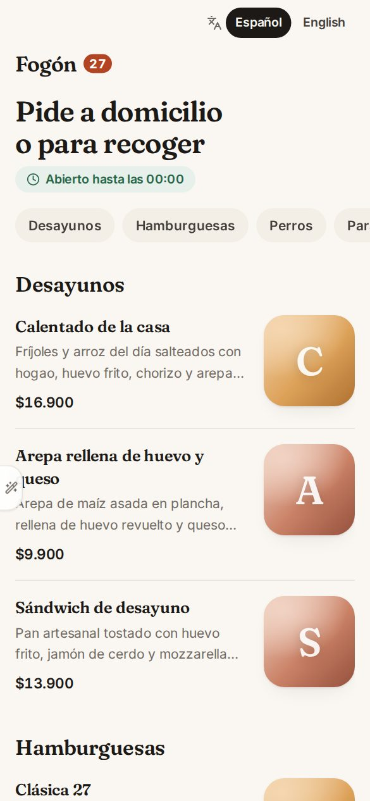
La carta para pedir a domicilio.
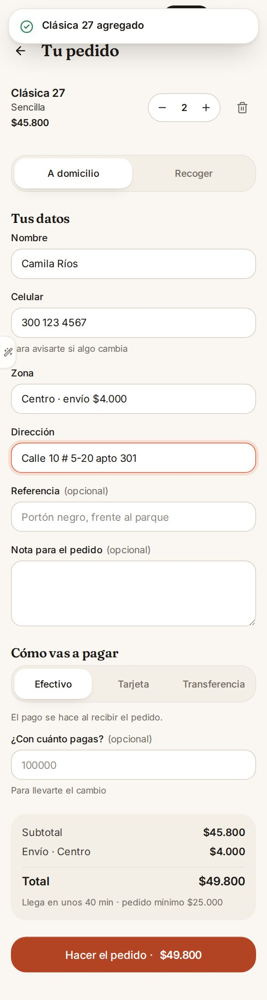
Datos, zona, forma de pago y resumen.
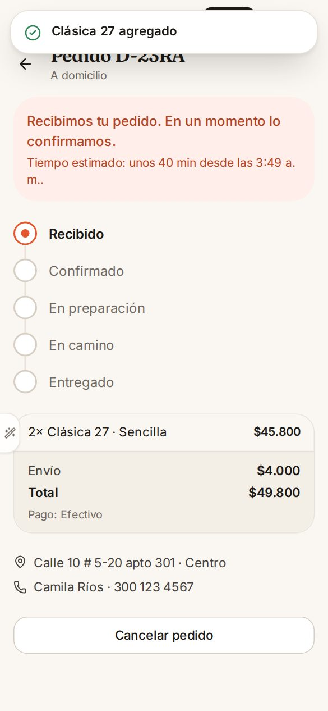
Seguimiento del pedido.
Arma el pedido (opción, cantidad y nota por plato) y toca
Ver mi pedido.
Elige A domicilio o Recoger, escribe nombre, celular y (si es domicilio)
zona y dirección.
Elige cómo pagará: efectivo (y con cuánto, para llevar el cambio), tarjeta por datáfono o
transferencia. Siempre se paga al recibir.
Toca Hacer el pedido y sigue el estado:
Recibido → Confirmado → En preparación → En camino (o Listo para recoger) → Entregado.
Cada zona tiene su tarifa de envío, pedido mínimo y tiempo estimado. Si el local está
cerrado, el cliente puede armar el pedido pero no enviarlo. Puede cancelar solo
mientras nadie lo haya confirmado.
9.2 Lo que hace caja
En Caja → Domicilios los pedidos aparecen en grupos: Nuevos,
En cocina, Listos, En camino y Finalizados hoy. Llega un aviso
cuando entra uno nuevo.
Confirmar (o Rechazar con motivo).
Pasa a cocina.
Cuando la cocina lo marca listo: Despachar eligiendo el
domiciliario, o Entregado al cliente si es para recoger.
Cuando llega: Entregado.
Cobrar registra el pago como cualquier otro (también después de
entregado).
Un pedido ya en cocina se puede cancelar con motivo; queda en el registro de
cambios.
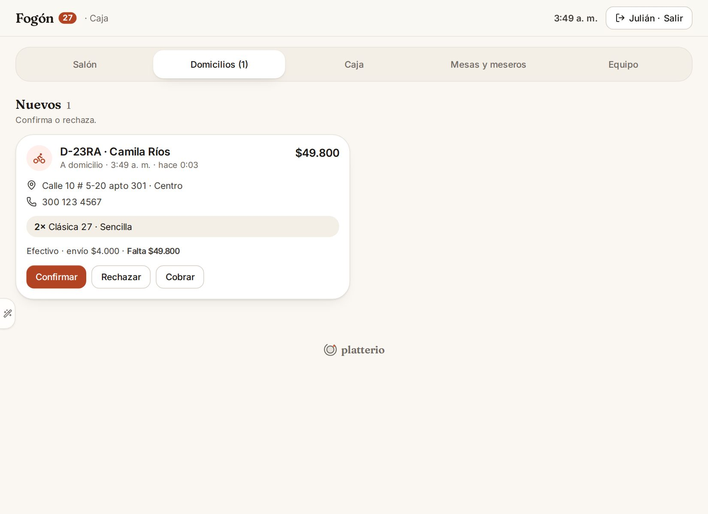
Bandeja de domicilios de caja.
El administrador configura en Configuración → Domicilios y recogida: si se reciben
domicilios y recogidas, el horario (puede cruzar la medianoche), los minutos de
preparación, las zonas y los domiciliarios.
10. Administrador: reportes, calificaciones y alertas
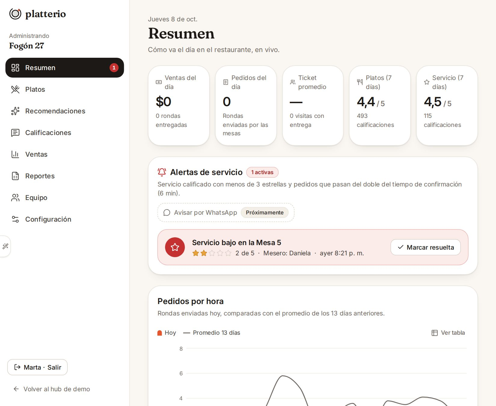
Resumen del administrador: lo de hoy y las alertas.
10.1 Reportes
En Reportes eliges el periodo (hoy, 7 días, 14 días o fechas propias) y ves:
Vendido (rondas entregadas) frente a cobrado en caja.
Cobrado por forma de pago y ventas por mesero.
Domicilios y recogida: pedidos, cancelados, tiempo promedio, porcentaje entregado a
tiempo, envíos cobrados y ventas por zona.
Cambios y anulaciones del personal: quién tocó una ronda, qué cambió y por qué.
Mesas cerradas sin cobro registrado: dinero sin soporte, para revisar.
Cierres de caja con su diferencia y nota.
Cada tabla tiene un botón CSV para descargarla y abrirla en Excel.
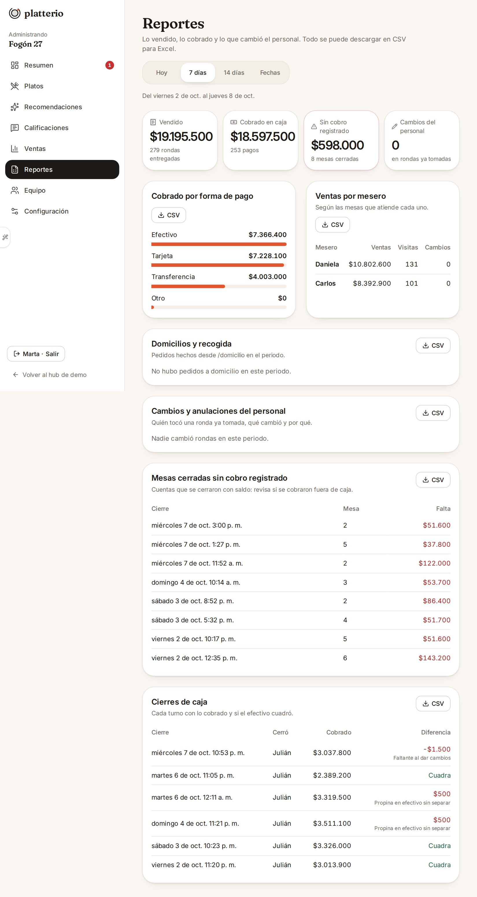
Reportes completos.
10.2 Ventas y preferencias, calificaciones y alertas
Ventas: ventas por día, los platos más pedidos por franja y las restricciones
alimentarias más registradas (sin datos personales).
Calificaciones: ranking de platos y reseñas, y la calificación del servicio por
mesero.
Alertas (en el Resumen): servicio calificado por debajo del umbral, o pedidos que
llevan demasiado sin confirmar. Se resuelven marcándolas.
11. Tu marca, idioma y moneda
11.1 Marca
En Configuración → Identidad de marca eliges:
Tu logo (PNG, JPG o WebP; se reduce solo).
Un estilo de la carta (Clásico, Café minimal, Fresco redondeado, Bistró oscuro,
Gourmet editorial, Parrilla rústica, Urbano colorido, Mediterráneo o Neón nocturno):
cambia la distribución, las esquinas, la letra y si el fondo es claro u oscuro. Se ve
primero en una vista previa con tus platos. Tu logo, nombre y color se mantienen.
Una paleta de colores: Cálido, Clásico, Moderno, Fresco o Rústico (colores y
acento de una vez).
Una foto de portada para los estilos con encabezado de foto.
Las tipografías de títulos y de texto.
El color de acento (el sistema calcula una versión con buen contraste para
botones y textos).
Todo cambia al instante en la carta del cliente, el seguimiento y las demás pantallas. La
cocina conserva su modo oscuro.
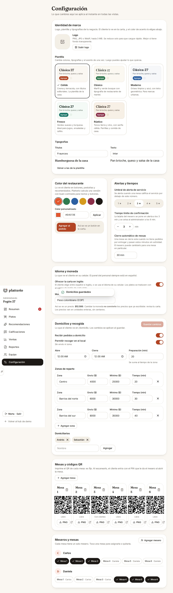
Configuración del negocio.
11.2 Idioma y moneda
Idioma: la carta del cliente puede ofrecerse en español e inglés. El cliente ve el
idioma de su celular (si el negocio lo ofrece) y puede cambiarlo con el selector de arriba.
El panel del personal siempre está en español.
Moneda: pesos colombianos, mexicanos, chilenos, dólares, euros o soles. Cambia el
símbolo y el formato, pero no convierte los precios que ya escribiste: revisa tu
carta. Los precios van en unidades enteras (sin centavos).
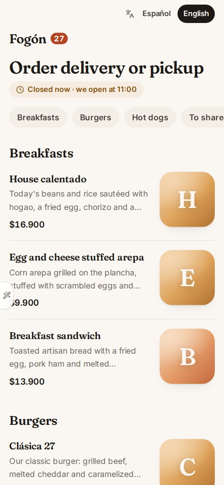
La carta en inglés.
12. Un día de trabajo, de principio a fin
Al abrir
Caja abre el turno con el fondo en efectivo.
Cocina entra a su tablero y lo deja visible.
Cada mesero entra con su PIN y revisa sus mesas asignadas.
El administrador revisa que los platos agotados estén desactivados y que los
domicilios estén activos con su horario.
Durante el servicio
Llegan clientes: el mesero abre la mesa y entrega el PIN.
El cliente pide (o el mesero toma el pedido). El mesero confirma.
La cocina prepara y marca listo; el mesero entrega.
Se pide la cuenta: caja cobra (en partes si hace falta) y el mesero
libera la mesa.
Los domicilios entran a caja: confirmar → cocina → despachar → entregado → cobrar.
Al cerrar
Revisa que no queden mesas abiertas con saldo (Caja → Mesas por cobrar).
Caja cierra el turno contando el efectivo y explica cualquier diferencia.
El administrador mira los reportes del día y las alertas.
13. Preguntas frecuentes y problemas comunes
Un cliente escaneó el QR y no puede pedir.
La mesa no está abierta o le falta el PIN. Abre la mesa desde el salón y dale el PIN (o
muéstrale el QR de la hoja de la mesa). Mientras tanto puede ver la carta.
El cliente puso un PIN y dice que no es el de la mesa.
Revisa el PIN en la hoja de la mesa: es de 4 dígitos y solo vale mientras esa mesa esté
abierta. Si la mesa se cerró y se volvió a abrir, el PIN cambió.
Un pedido no llega a la cocina.
Los pedidos del cliente llegan primero al mesero: falta confirmarlo. Si pasa mucho tiempo sin
confirmar, la tarjeta se pone en alerta y se avisa al administrador.
Me equivoqué al confirmar o hay que cambiar un pedido que ya está en cocina.
Usa Editar en la ficha de la mesa: puedes quitar, cambiar o agregar.
Cocina recibe el aviso de cambios. Todo queda en el registro.
Se cerró una mesa sola.
Una mesa sin actividad y sin pedidos por entregar se cierra pasado el tiempo configurado (30
minutos por defecto). Se puede ampliar para una mesa o para todo el negocio en Configuración.
Olvidé mi PIN.
Pídele al administrador (o al encargado, si eres mesero o cocina) que te asigne uno nuevo en
Equipo. Los PIN no se muestran.
La caja no cuadra.
Al cerrar, escribe en la nota qué pasó (cambio mal dado, propina en efectivo sin separar…).
Queda en el reporte de cierres para revisarlo.
Quiero cobrar con tarjeta desde el sistema.
Platterio no procesa pagos. Cobra con tu datáfono y registra el pago en Caja como “Tarjeta”.
14. Lo que Platterio no hace · Estado de esta versión
Lo que no hace, a propósito
No procesa pagos. Solo registra lo que tú cobras.
No calcula impuestos ni emite facturas. El precio de la carta es el precio final; la
facturación electrónica y los impuestos los manejas con tu contador.
No suma propina. Cada negocio la maneja a su manera.
Estado de esta versión (preliminar)
Versión de demostraciónHoy todo funciona en el navegador con datos de ejemplo: los
datos se guardan en el propio dispositivo y se comparten entre pestañas del mismo navegador.
Todavía no hay base de datos, cuentas reales ni cobro de la suscripción; eso viene en las
fases siguientes. Por eso:
Los datos de la demostración se pueden reiniciar con
Panel de demo → Reiniciar datos.
La seguridad (PIN, permisos) es de interfaz; con las cuentas reales se aplicará en el
servidor.
Algunas funciones de los planes (dominio propio, importar menú, soporte prioritario) aún
no están construidas.
Esta guía es preliminar. La versión definitiva, pensada para entregar a los clientes, se hará
al final con las pantallas finales.